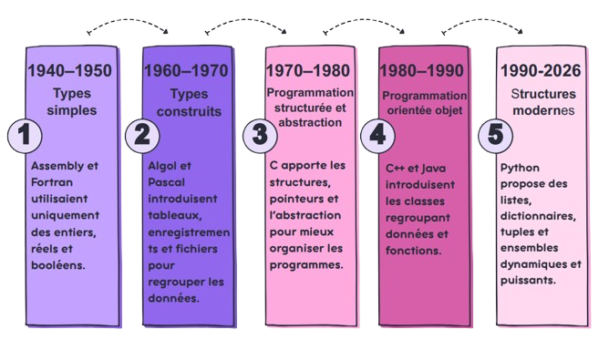

Les débuts de l’informatique : types simples
Au départ (années 1940–1950), les langages de programmation comme Assembly ou les premiers langages comme Fortran ne proposaient que des types de bases : (Les programmes étaient donc limités et peu structurés.).
- entiers (int)
- nombres réels (float)
- booléens (true/false)
Apparition des types construits:
Avec l’évolution des besoins, les informaticiens ont introduit les types construits (ou structurés), qui permettent de regrouper plusieurs valeurs. Dans des langages comme Algol ou Pascal, on voit apparaître :
- Tableaux (arrays): stocker plusieurs valeurs du même type
- Enregistrements (records / structures): regrouper des données différentes
- Fichiers: organiser les données en mémoire externe
Programmation structurée et abstraction:
Dans les années 1970–1980, la programmation devient plus organisée grâce à la programmation structurée. On utilise des boucles, des conditions et des fonctions pour écrire un code plus clair et plus facile à comprendre. Les types construits deviennent importants, car on utilise des structures comme les tableaux pour mieux organiser les données. On introduit aussi l’abstraction des données, qui permet de simplifier les programmes en cachant les détails techniques.
Programmation orientée objet:
Dans les années 1980–1990, la programmation orientée objet apparaît avec des langages comme C++ et Java. Elle introduit les classes, qui sont des types construits très puissants permettant de regrouper données et fonctions, de réutiliser du code grâce à l’héritage, et de modéliser le monde réel, ce qui rend les programmes plus organisés et plus proches de la réalité. Chaque objet créé à partir d’une classe possède ses propres attributs et peut utiliser les méthodes définies dans la classe. L’orientation objet facilite la modularité, car on peut développer des parties du programme indépendamment les unes des autres, et elle permet de mieux gérer la complexité des programmes en structurant le code autour des objets et de leurs interactions.
Langages modernes:
Depuis les années 2000, les langages modernes comme Python ont rendu la programmation plus simple et plus efficace grâce à des types construits puissants. On trouve notamment les listes, dictionnaires, tuples et ensembles, qui permettent de stocker et manipuler des données de manière organisée. Les listes sont modifiables, les tuples immuables, les dictionnaires associent clés et valeurs, et les ensembles regroupent des éléments uniques. Ces structures sont faciles à utiliser, dynamiques et offrent de nombreuses méthodes intégrées pour trier, filtrer ou transformer les données rapidement.
Carte mentale récapitulative
